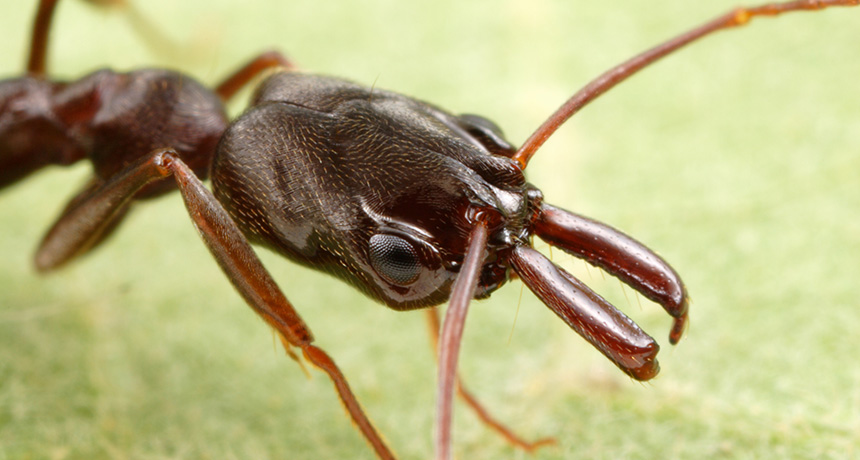

AMAZING TRAP JAW ANT FACTS!
Trap-jaw ants, also known as Odontomachus, are a genus of ants that are known for their unique mandibles that can snap shut at incredible speeds. These mandibles can be used for a variety of purposes, including catching prey, propelling themselves away from danger, and even as a means of communication. Trap-jaw ants are found in tropical and subtropical regions around the world, and there are over 150 species known to science.
Look at this COOL TRAP JAW ANT VIDEO!
Trap-jaw ants are incredibly agile and can move quickly and precisely, even over rough terrain. They are also known for their ability to launch themselves into the air using their powerful jaws, allowing them to escape danger or catch prey. Some species of trap-jaw ants have even been observed jumping up to 8 centimeters in a single leap. In addition to their impressive physical abilities, trap-jaw ants are also fascinating from a behavioral perspective. They are highly social insects that live in colonies led by a queen, and they communicate with each other using a variety of methods, including pheromones and tactile cues. The study of trap-jaw ants provides valuable insights into the evolution of social behavior in insects, as well as the biomechanics of movement and communication.
